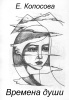
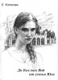

Екатерина КОПОСОВА
Мгновения в Курске...
Рябины, курские рябины!
По тихой улочке иду,
Смотрю- и сердце вдруг забилось,
И точно захватило дух...
Ведь окна смотрят так похоже,
Как будто вижу отчий дом!..
Да, каждый в мире гость, прохожий.
И отыщу слова с трудом.
Рябины осеняют чудно
Дом деревянный, темный сруб...
Все, что в душе несла подспудно,
Звучит и дышит на ветру.
Не здесь ли загостилось детство...
Но как рябина горяча!
Мой Север- светлое наследство,
Край сокровенный... Как свеча
Сгораю, тлею понемногу
В иной земле, в другой судьбе...
Увы, не соберусь в дорогу, -
Во сне лишь плачу по тебе!
И наяву душа тоскует,
Порой не ведая о том...
Какую даль и глубь какую
Старинный подарил мне дом!
Рябину солнышко целует,
Румяня гроздьев теплоту...
Я в сердце унесу не всуе
Миг встречи, чистую мечту!
Когда-нибудь стихи прочту...
30.06.2006
И был орех - зеленый храм...
Срубили дерево - убили душу,
А корни кровеносные в земле
Бетон глухой безжалостно задушит...
Вам больше света?
Сердце же во мгле!
... Так мы себя уничтожаем сами!
Природа, все живое - как балласт?...
Вооружившись техночудесами,
От ближних ждем... душевного тепла!
Июль 2003 г.
Читая Ахматову... Февраль.
Судьба подарила скудное детство
И тысячу жизней в воображенье...
От памяти Тайны куда же мне деться!
А дни уплывают в странном скольженье...
Живу ли прошедшим, стихи читая?...
А, может, тоскую о настоящем,
В котором реальность под солнцем тает
Мгновеньями неуловимого счастья...
6.02.2007
* * *
Когда ж твой разум
проникнет глубже:
все это - майя,
покрыв обмана!
Увы, и опыт
тому не служит.
Но чудо в буднях -
не с неба манна.
Привязан к жизни...
Порвать ли узы!
Всей плотью, кровью
с землею связан.
Иллюзий древних
с тобой обузы.
Но жизнь - приманка.
Любовь - проказа...
Здесь все - обманно
и смехотворно.
А, может, больно.
И очень страшно...
Люби безмолвно.
Ограбят воры.
Сияет майя.
Ужель все зряшно!
20.12.2006
ДЕНЬ ОБЕРНЕТСЯ ВЕЧЕРОМ...
День обернется вечером.
Ласковой тишиной.
Сдержанно и доверчиво
Мир говорит со мной.
Неба глаза усталые
В сердце прольют ответ.
В памяти на проталинке
Дрогнет надежды свет...
Темной одеты дремою -
Горы пленят меня.
Нежность неутоленная -
Свет на исходе дня.
В СУМЕРКАХ
Каждый день
Завершается вечностью вечера.
Слушаю сумерки
В райском уснувшем саду.
Тишина
положила руки на плечи мне.
Тяжело и легко.
Ожидаю ночную звезду.
ВЕЧЕР В ИЮНЕ
Антенна на крыше,
как будто крест.
И рядом - горит луна.
И черные горы лежат окрест.
И я на ветру - одна.
И я не одна.
Не иссякла боль.
Как горестно на ветру!
Знобит меня: я больна тобой.
И с этой болью умру.
Вечер после грозы.
Прощальная бирюза
Притягивает глаза!
Погасшие облака...
Их тяжесть душе легка.
Прошел грозовой накат.
Сады, точно дети, спят...
Контрастно-темна земля...
А в небе что ищет взгляд?
Неясной вести звезды...
И нет ли в завтра беды...
В прошедшее ищет путь,
Чтоб памятью лет вздохнуть?
Но как звучит бирюза,
Вся музыкою - в глаза!
Июнь 1986 г.
В Новом Афоне
Памяти моего отца,
Копосова Николая Николаевича
Кипарисы, черные монахи...
Что им радость утреннего дня!
Это скорби неизбывной знаки,
Мне их трудно до конца понять.
Кипарисов стрелы ножевые
Устремились в солнечную высь,
Точно смерти силы роковые
Или жгучий приговор молвы.
Море ослепительное блещет
Приторной, густою синевой...
Пальмы, солнце - праздничные вещи.
Не сулит печали ничего!.
Чтобы мы ценили эту сказку,
Эту роскошь, музыку и свет,
Упоенье, красоту и ласку, -
Чёрный кипарис в лазурь воздет!
* * *
Лиловый всплеск - цветы в саду.
И сумерки виолончельны,
Я в прошлое легко войду,
пленясь неведомым значеньем...
Затрепетавшая листва
по-новому затронет душу.
Остались чувства - не слова.
Тот мир исчез, но не потушен.
Не отзвучал ни свет, ни лик,
ни тонкий аромат былого.
Цветы, как память, расцвели.
Как образ, музыка и слово.
Конец 80-х
Баркарола Чайковского
Скользит воспоминанье.
Плеск волны.
Прошедшего пленительные сны!
Прозрачная и призрачная грусть.
В минувшее лишь в музыке вернусь.
За звуком вслед печальный дрогнет звук,
Как лепестки в касанье милых рук...
Возникнут милосердные глаза.
Но жизнь нельзя словами рассказать!..
* * *
Коричнево-лиловатый
цвет веток, коры,
стволов...
Природа не виновата,
коль нам говорит
без слов!
Такая она от века -
глубинна, проста,
мудра.
А истины человека
страшны порой,
как и дела!
2003 г.
В ущелье Берёзовки
Под вечный шум реки,
под вечное движенье
писать бы мне стихи,
как жизни продолженье!
Как преломленье сна
и сотворенье яви...
Мне так река нужна,
которая поправит:
Весь мусор унесет,
подарит солнца бусы,
Река, она спасёт,
тоску мою потупит,
Научит жить смелей,
улыбки не теряя.
Деревья на скале...
Река с камней ныряет
Веселый водопад...
Душе бы так смеяться!
Вдоль речки - вьюн - тропа,
И неба необъятность
над ней...
1988 г.
Минул жаркий день...
Темна земля
Светла заря.
Лиловы облака.
Утаивают
тополя
шептанье ветерка.
Летучей мыши
тёмный знак
перечеркнул зарю...
Такая веет тишина, -
в стихах не повторю!
1978 г.
* * *
Уходит жизни день,
Уходит день судьбы.
Мир птиц, цветов, людей
Теряет день любви.
Вернётся завтра вновь
И солнце, и мечта.
Работа и любовь.
Печаль и красота.
Но в новом дне земли
Взгляд, голос, слух иной!
Минувший день велит
Родниться с новизной.
Но жаль вот этих чувств!
Рисунок дня сгорит!..
С утра я вновь учусь
Ходить и говорить.
ВРЕМЕНА ДУШИ
Кисловодск
Северокавказское издательство "МИЛ"
2008
И будет утро..
Усну - забуду усталь.
И - бродом - сквозь беду.
... Не будет утро тусклым
В моем земном саду.
Досолнечное небо.
Не бурая трава, -
Сплошь бежевая, нежно
Прильнет к моим словам.
Печалью лечит осень,
Согреет холодок.
Дыханье свежих сосен
Душа вбирает впрок.
В зените неба - птицы,
Как мак рассыпан ... Миг -
И солнцем озарится
Земли несмятый лик!
1998 г.
Липы в цвету
Липы цветут.
Сквозь суету,
спешку, тщету -
липы цветут!
Липы пьянят.
В трезвости дня
кружит меня
их аромат!
Липы цветут...
Морось, туман...
Мир - не обман?
В память росту.
Музыкой лет
нежность и боль...
Все - есть любовь.
Липовый цвет...
Явь или нет?
Липовый цвет.
Июнь 1986 г.
* * *
Великое безмолвие Вселенной!
И нет красноречивей немоты.
И нет предела крыльям изумленья.
Как взоры звезд
пронзительно чисты!
Что вспоминают звездные кочевья?!
Горят - не гаснут мириады свеч ...
А на Земле
озябшие деревья.
И трудно грусть - заботу мне развлечь.
Просто жизнь
Солнце - ультрафиолет,
Воздух солнечный, стерильный!
На ресницах белый свет
Вспыхнет радужным отливом.
Кто придумал семь цветов
Удивительного спектра?
Кто придумал нежность слов
И мечту на крыльях ветра?
И гляжу я в эту даль,
Как всегда смотрели люди.
И веселую печаль,
Знаю, сердце не избудет.
* * *
На мокрых туях
капельки дождя,
И в каждой капле -
отраженье мира...
Вот только сохранить
никак нельзя
Загадочное преломленье
мига!
И я свои мгновенья
не держу
И вечно утешать себя
пытаюсь...
Ведь я такой же
капелькой
скольжу
По стеблю дней
к слиянью с вечной
тайной.
Конец 80-х гг.
* * *
Волшебный отсвет елочных шаров!
И сладость детства грезится обманно.
А в синеве небес кружится манна -
Вечерний снег ... И месяц над горой.
Мы лишены всего в шараде дней.
Мы все имеем в сердце сокровенном...
Мгновенный отблеск гаснет
во Вселенной.
Мираж мечты. Дрожит звезда в окне.
05.02.2000
Сиреневое утро
Структура сирени, -
упругий объем.
Негаданно реют
над нашим жильем
Лиловые купы
цветочной души...
Душою тоскуя,
Сиренью дыши!...
30.04.2000
Памяти мамы
Душа болит о том,
Что вечер за окном...
И звезды холодят
Земной усталый взгляд.
О том душа болит,
Что кануло вдали,
Что отнято судьбой,
Не понято тобой,
Что тает на глазах,
Чего не рас сказать,
Что музыкой звучит
И трепетом души...
О том снедает грусть,
Что потерять боюсь,
И что утрачу вдруг,
Разбив душевный круг.
1986 г.
Зов детства
Копны травы,
летних цветов!
Темные рвы.
памяти зов!
Мир тишины...
смеха и слез.
Сказка
страны
струнных берез...
Музыка троп.
запахи трав.
Прямо с утра
в мир без прикрас!
Клевер, лопух,
мышиный горох...
Солнечный дух!
радостный вздох.
...Детство, -
в крови
вечно живи -
Миром добра,
зовом любви!
* * *
Березовых ветвей обломки,
Как папиросы, мокнут в луже.
В грязи белеют, как отбросы...
А рядом -
Мертвый ствол ненужный.
И выше - облака живые,
Белее яблоневой пены...
Везде контрасты ножевые.
И ... ничего я не успею! ...
* * *
Я беру себя в руки!
Вновь - беру!
Вдруг - беру!
В этой трудной науке
Я ладони сотру.
В сизой дымке морозной
Горы копят тепло.
Я опомнюсь,
Но поздно!
Жизнь -
Мое ремесло.
1990 г.
* * *
Выгода - одним путем,
А любовь -
иначе.
Каждый - к цели
мы идем,
Но лишь сердце
зряче.
Задыхаясь и кляня ...
Что?
Кого?
Во имя? -
В звездном мраке,
в свете дня,
Путями своими ...
Стихи ... Откуда?
Это были кудрявые травы.
Колокольчики у колодца ...
Крылья чаек у переправы
И разлуки печальное солнце.
Чтенье мамы. Хрустальная сказка.
Это были волшебные строки!
И алела небесная краска
То на западе, то на востоке.
Это были снежинки и звезды.
Это пели шаги и капели.
И вскипали черемухой весны.
И у школы березы желтели.
На столе самовар. С тетей Маней
Приобщаемся к доброму чаю,
А душа насыщается малым
И судьбы своей взрослой не чает.
Улыбаются чистые чашки ...
Вымыт пол. Спит котенок на печке.
Детство - будущего обещанье.
А стихи - это жизнь человечья.
1986 г.
* * *
В этом мире -
прозревшем, -
вновь открыто нам
райское лето!
Ах, земля не стареет,
Лишь мы опускаемся
В Лету.
Мы уходим, уходим -
каждым мигом
и сердцебиеньем ...
Мир бессмертный, свободный,
что ему наши жалкие
пени!?
Вновь ромашковый рай...
или рой желтоглазых
снежинок -
Свет земной ...
Выбирай
Путь и шаг свой,
где камень,
суглинок ...
Верь, что День твой
негаданно длинный,
Другу нож
не вонзи
только
в спину!
1998 г.
* * *
Лиловый всплеск - цветы в саду!
И сумерки виолончельны,
И в прошлое легко войду,
Пленясь неведомым значеньем.
Затрепетавшая листва
По-новому затронет душу.
Остались чувства - не слова.
Тот мир исчез, но не потушен.
Не отзвучал ни свет, ни лик,
Ни тонкий аромат былого.
Цветы, как память, расцвели.
Как образ, музыка и слово.
Конец 80-х гг.
* * *
Из всех невечных
вечеров
Один - единый соткан
вечер.
И фонари сошлись
на вече
Под звонкий колокол
миров.
Перенасыщенность
минут
Все прожитое
за плечами.
Стоит и головой
качает.
Но как я руки
протяну?
О. как беспомощно
во мне
Сошлись, сроднились
чьи-то вздохи;
Слова, шаги, миры,
эпохи!
Сердцебиенье в тишине.
И самый легкий жест
и взгляд
Так ясен, так сиюминутен!...
И сердце не отыщет
сути ...
И, в звездах, плачут
тополя...
* * *
Солнечный луч дрожит,
Ранит земную твердь...
Разве жизнь не равняется жизни,
А смерти - смерть?!
1994 г.
* * *
Коричнево - лиловатый
цвет веток, коры, стволов ...
Природа не виновата,
коль нам говорит без слов!
Такая она от века -
глубинна, проста, мудра,
А истины человека
страшны порой, как и дела!
2003 г.
* * *
"И безнадежность ищет слов..."
М.Цветаева
В запустенье душа,
в одиночестве памяти. Снова
я ищу не дыша,
сокровенно-целебного слова.
Тишина облаков.
Белый траур цветущего сада.
И - заплакать легко.
И обманчива эта отрада.
В запустенье весна.
Сад и дом. Безответная
вечность.
И течет тишина
через сердце мое
в бесконечность.
Конец 80-х гг.
10 февраля
Добуду искорки надежды
Из серой хмари за окном,
Где сосны молодые брезжат
На склоне. Сердцу не темно.
Еще мы повоюем, право!
Научимся любить врагов.
Как Гете: "Тот имеет право
На жизнь, кто в бой идти готов..."
1999 г.
* * *
Когда человек глух,
Хоть кричи ему, хоть шепчи...
Как будто в немой ночи,
Все зря! Истощишь дух.
Когда человек слеп,
Ты не говори: "Гляди!"
На свет его не веди.
Ты сам для него нелеп.
А если же он нем,
Не спрашивай: "Что и как?"
Всегда попадешь впросак.
Душа твоя вновь ни с чем.
* * *
Расскажите мне сказку.
Любую!
Я поверю и в смысл, и в слог.
Нарисуйте мечту голубую.
Я почувствую - мне повезло.
Голос хриплый, любой, - только
добрый! -
Буду слушать и слушать...
Навек
Сохраняя, лелея подробность.
Ведь со мной говорит Человек!
Расскажите правдивую Сказку,
Расскажите себя без прикрас.
Может, все я забуду, но ласку
Сохраню, -
утешающих глаз.
Перед Новым годом
И каждый живет. По-своему,
Как умеет...
На рваный асфальт
ложится, как марля, снег.
Машины летят и птицы кричат,
немея,
И молча бредет неузнанный
человек.
И как разобрать в суете
перед Новым годом,
К чему этот блеск
раскрашенной мишуры?
Мы все ищем чуда, а чудо...
почем сегодня?
Понять бы условье,
хотя бы в конце игры.
1988 г.
* * *
Хосе Марти (Куба)
перевод с испанского Е. Копосовой
В июле белую розу
Лелею,
белея снега! ...
Так искренний друг
поможет,
В чьем сердце
корысти нету.
Ф. Г.Лорка
Перевод с испанского Е. Копосовой
Гитара
.
Заплакала гитара,
разбился купол утра.
Заплакала гитара,
не может замолчать.
Так плачет монотонно
струя из перламутра
И над горами ветер...
звучи, моя печаль!
Не умолкай, гитара!
пой о веках далеких.
Аккорды - точно брызги
горячего песка.
Но нет камелий белых!
Стрела не знает цели ...
Оплачь без утра вечер
и сердце,
раненное на века.
1999 г.
* * *
Бог милосерден, -
Он Мастеру дал покой
За все усердье
и муки в грязи людской.
За сокровенность
самых бессмертных снов.
В пристальном свете лунном
верить дано.
Легкая млечность,
сладкий забвения рай...
Ныне и вечно,
память, не умирай!
1988 г.
Мир декабря
Сиреневых склонов
бесснежный пейзаж
ни кистью, ни словом
ты не передашь!
Пронизана ветром
бесслезная даль.
Молчаньем ответят
земные года.
Все годы земные
в сердечном толчке...
Куда же я ныне
бреду налегке?!
5 декабря 1997 г.
Тем, кто ушел
Памяти родителей
Вы были сознанием
Этого мира
Дыханьем его
И его осязаньем...
Быть может, я вижу
Другими глазами
Деревья и небо
В свеченье эфира?!
Я чувствую радость,
Смятенье, страданье.
В познании мира мужаю,
Старею.
Вы были стократно добрей
И мудрее.
Вы были, как боги, в земном Мирозданье!
Так вам ощущаю.
17.05.1999
К Марине Цветаевой
Душа вселенская.
Душа морская.
Вся мука женская.
Вся боль мирская.
Психея светлая.
Хорал органный...
Всего отведала
Ввек ураганный!
Ты, огнекистая
Душа - рябина...
Как солнце, чистая
Скорбь, свет рубина...
Замерев у воды..
Мозаика жизни
Из тысяч цветов.
Брильянты на травах играют...
К малейшей утрате
ты разве готов!
Но часто проходишь
по краю.
И новая осень.
И давняя грусть.
И неимоверная нежность.
Прощальные листья
Свистят на ветру.
И гаснут в грязи
неизбежно.
А небо такое,
что скрипкам неметь...
Такое сияние в кронах!
Мгновенная нежность,
Бездонная смерть,
Прекрасная жизнь -
недотрога!
Вижу детство..
Созвездья зимних гроздья,
Великие снега.
И неподвижный воздух,
Зима была долга!
И тем нежнее верба
Касалась вдруг щеки
Цыпленком желтым
первым...
И вот уже гудки.
Река живет и дышит...
И храмы, как цветы,
Качаются неслышно,
Как в зеркале, чисты.
Озоновые грозы,
А вечер, как свирель...
И у амбара козы,
И куры во дворе.
Ничто не жило розно.
И детская душа
Мир принимала просто,
Расстаться с ним спеша...
Мой город
Великому Устюгу
Помню сентябрьские пестрые астры,
Робкого детства земные цветы.
Мир неразгаданно,
чудно прекрасный...
Устюг. Светают сирени кусты.
Город, где самые нежные сосны!
В памяти шум их - высокий орган...
Годы? Минуты? -
мы прожили розно...
В сердце стучатся ночные снега!
Дом деревянный,
бревенчатый, темный...
Кличет калитка. Войду ли опять?
Тянет черемухой... Все я запомню,
Город мой горестный
свет мой, дитя!
Храмы старинные в зове закатов...
Трепетной чайкой целую волну.
И по мосточкам иду по дощатым,
Сердцем не смея спугнуть тишину.
Конец 80-х годов
У тёти Мани
Памяти Марии Николаевны Семёновой
Иконы над столом.
Мы все живём под Богом!
От печки так тепло...
И надобно немного -
На лавку у окна
Присесть и встрепенуться:
О, как изба полна
Любви ежеминутной!
О том и самовар
Поёт неутомимо.
Любовь всегда права,
Как хлеб, незаменима.
Дымится вкусный чай, -
Пока не чай, а запах.
Я обожгусь сейчас
И улыбнусь, однако...
И синие глаза,
Глубокие, как время,
Зовут меня назад,
В тот мир без повторенья.
1989 г.
* * *
Нарисую холодное небо в заре
И, как небо, красивые влажные астры.
Нарисую рябину в пустынном дворе
Самой яркой и памятной
пурпурной краской.
И услышу: заплачут мостки под ногой...
Я в квартиру войду, изумленно-немая.
Это ветер окликнул? Иль кто-то другой?..
Этот холод и свет
душу мне пронимают.
Сыну Анатолию
А жизнь сметает на обочину -
Опять и снова, и всегда...
В болезнь, в печаль
и в одиночество.
Сметает в прах, чего гадать!
Но только снова солнце
майское
Зажгло игрушку на столе...
И, зачарована приманкою,
Я улыбаюсь тайне лет...
1994 г.
* * *
Слепою силой
ты заброшен в жизнь...
А иногда подумаешь
- слепой ли ты!
...Росинка - капля на листе
дрожит.
Все в мире движется,
не ведая покоя.
Таинственные звенья
естества
Неразлучимы и неразделимы...
Нас вечность ждет -
и это не слова...
В нас - жизнь и смерть!
И мы - тоской палимы.
17.01.2007
* * *
Отпусти обиду! По воде
Ты пусти ее листочком малым
Вот заря играет бликом алым ...
Не лелей же боль свою в беде.
Прошлую обиду отпусти,
Что давно пустила в сердце корни.
Трудно без нее?
О добром вспомни!
Улыбнись на солнечном пути...
Все и всех, сильнее став, прости!
* * *
"В этом мире Борьбы и наживы..."
С.Я. Надсон
Чем же, чем же мы живы
В этом мире слепом?!
Вожделенной наживы
Не ищите ни в ком...
Братья, ближние, люди! -
Каждый - жалости ждет...
Но удачу на блюде
Случай не раздает!
Только этим и живы -
Человечьим теплом!
...В мире лжи и наживы
Помни чистый псалом ...
31.07.2003
* * *
Вологда. Домик Петра.
Боязно мне, шестилетней!..
В комнатах полумрак
В отсветах яркого лета.
Тайна времен глубока!..
Вещи. Музейная святость.
Помнится слепок-рука,
Небо в заре необъятной...
30.06.2006
Вечное
Молчание - в камне.
Потрогай руками!
Так было веками.
Вся мука исканий,
Вся горечь и смута
Не знали приюта
Надежней молчанья.
И храм - изначален.
И миг беспечален.
Молчанье венчает
И взрывы и вздохи
Оглохшей эпохи.
...В сиреневой пене
У лета ступени.
Безмолвное пенье.
Сердечные пени.
Молчание лечит,
Как руки на плечи.
Несуетны речи...
Чему мы предтечи?...
30.09.1989
Ирине Балаевой
* * *
Фиолетовое лето
В обрамленье изумруда!
Прямо в душу
Мягким светом
Льется трепетное чудо...
Изгородь едва заметна
А за ней - цветы на грядках
Встали воинством Несметным...
Изумительно - нарядны!
Низко облачность Сгустилась.
И как будто нету Ветра...
От земли исходит сила
Упоительного света!
2006 г.
Минул жаркий день..
Темна земля.
Светла заря.
Лиловы облака.
Утаивают
тополя
шептанье ветерка.
Летучей мыши
темный знак
перечеркнул зарю...
Такая веет
тишина, -
в стихах не повторю!
1978 г.
* * *
Сорт яблок с названием
"зимний банана",
Плоды поливные отменного вкуса!
Наверное, родственники шафрана...
Мне их не едать уже.
Это и грустно...
И дом сиротливо стоит в переулке.
Уже зацветают вокруг абрикосы...
Нет прежних хозяев.
Во времени гулком
И отзвук их судеб услышать
непросто...
Но сердце недаром
и помнит, и верит:
Все доброе живо под солнцем
навеки...
Апрель открывает и окна, и двери.
И светом надежды
живет в человеке...
ЦЕНА СВЕТА
НА ЧЁРНОМ ПИАНИНО
"Всё видели глаза мои,
но возвратились к вам,
белые хризантемы..."
С японского
Лимонно-белые цветы
Неосязаемо-прозрачны.
А за окном дождя персты
касаются листвы незрячей...
Туманный день. Усталый вздох.
Но солнечные хризантемы
Поют и плачут: мир есть Бог...
и светом прорастают тени.
1.10.1989
* * *
за пеленою слёз
Мир ясен и беспечен.
и лёгонький мороз
кладёт ладонь на плечи...
за поволокой лет
Больней слова и взгляды.
Есть Память на земле,
А счастья мне не надо.
ВЗГЛЯНИ ИНАЧЕ
Оле Каминской
горит спокойная звезда.
А проще - утреннее солнце!
По-свойски нежится всегда
На кухне, с кошкой на оконце.
�Мы в космосе - и на земле -
Живём, чудес не замечая!
О чём вам грезится в тепле,
За чашкой утреннего чая?
15.08.2011
НА ОДНОМ ДЫХАНИИ...
Эмеру Кустурице
...А жизнь не стоит ни гроша!
И оттого так хороша.
Дыханье, взгляд, и ритм, и шаг...
И, в солнце, светится душа!
Живи, тоску не тормоша...
Ведь жизнь не стоит ни гроша.
Живи, люби и пой, душа,
Препоны глупые круша!
28.11.2011
* * *
Листья розовеют от мороза,
Листья покаянные у ног...
Вот и всё. И всё, по сути, просто.
Только клён в тумане одинок!
Только сняты все покровы с тайны.
Боль земли навзрыд обнажена.
Только ветер стылыми перстами
Бьёт по стёклам низкого окна...
* * *
Луна на ущербе.
Горы гребешок.
А вспомню: на вербе
Цыплячий пушок...
Вся жизнь - ожиданье.
Стучат поезда...
Прошли в назиданье
Земные года.
Времён обращенье.
Иголочки звёзд.
Прощанье. Прощенье.
Итог и... вопрос.
12.01.2007
* * *
На сердце!.. Всё как есть
В смертной судьбе приму.
...Май отдаёт нам честь!
Жить бы лишь по уму...
5.05.2007
* * *
Общими нервами
мир перепутан,
Переплетён и пронизан насквозь.
Если страдаешь ты
в эту минуту, -
сердце почувствует:
что-то стряслось!
Бурые травы
от ветра заплачут,
мёртвые травы минувшей поры...
Каждою почкой,
листочком незрячим
вздрогнут деревья
на склоне горы.
ПАМЯТИ ЮРИЯ ВИЗБОРА
Что останется после тебя?
Чьи-то пальцы платок теребят...
Чьи-то лица и лики в слезах.
Это словом нельзя рассказать!
И останется песня в ночи.
И - ненужные к дому ключи.
И большая, как память, земля.
И на фото улыбчивый взгляд.
Только миг, только шаг, только взлёт.
Это - жизнь. И она не умрёт.
Песня Жизни твоей нам нужна,
Бесконечная, точно весна.
5 МАЯ
Млечная алыча,
Солнечный снег весны!
Годы ли на плечах?
Или цветные сны?
ИЛЬЕ МИКЛАШЕВСКОМУ
Илюша!
Так слышать и слушать
Умеешь лишь ты...
И ноты чисты
Души твоей милой,
Илюша!
А мир не из плюша,
И беды нас плющат...
ПОД МАЛЫМ СЕДЛОМ
Илье Миклашевскому
Забуду все слова
Пред высью поднебесной!
И кругом - голова.
Душа парит над бездной.
Там ясень, алыча,
Черемуха, калина...
Журчание ключа,
Чью влагу пьет долина.
А сердце рвется ввысь,
В себя вбирая склоны.
И голос синевы -
Мечтой неутоленной.
Ах, если на подбор!
И сосен хороводы...
Лугов цветной убор
В дыхании свободы.
Вся мощь земных веков,
Посыл тысячелетий -
Звучат, как хор стихов...
И скалы в солнце летнем
В молчании времен
Стоят, не изнывая.
Здесь все - всему взамен.
Вселенная живая.
* * *
Любовь вне разума.
Все этим сказано.
Екатерина Копосова, Кисловодск
 
телефон Екатерины Николаевны Копосовой: 8.909-774-67-08
Е.Копосова. Памяти Игоря Панькова
Е.Копосова. Сотворчество ума и вдохновенья (рецензия на вечер в театре им. Н.С. Гумилева)
страница Екатерины Копосовой на stihi.ru
Страница "Литературного Кисловодска"
Страницы авторов "Литературного Кисловодска"
Последнее изменение страницы 14 Jan 2022
ПОДЕЛИТЬСЯ:
{kind=link}
{kind=link}